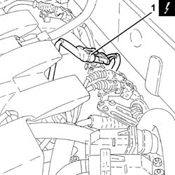

1080B60 ADDITIONAL AIR DELIVERY BY-PASS SOLENOID - R + R
- Path
- Procedures > 10 ENGINE UNIT > 1080 EXHAUST EMISSION CONTROL SYSTEM > 1080B EXHAUST EMISSION CONTROL SYSTEM > 1080B60 ADDITIONAL AIR DELIVERY BY-PASS SOLENOID - R + R
- Kind
- repair procedure (removal / refitting; the operation number is the code)
- Applies to
- engines: 1.8 T.SPARK; all production periods
- Interactive page
- https://sloeber94.github.io/elrnDB-aGt/en/#/125001129
Applies to: engines: 1.8 T.SPARK; all production periods
 Removing
Removing
 Refitting
RefittingPosition the vehicle on a lift.
Make sure that the ignition key is in the OFF position, then disconnect the negative battery terminal (-)
Description | Connector | |
|---|---|---|
- | Battery | A1B |
1. Disconnect the electrical connection for the Lambda sensor.
Description | Connector | |
|---|---|---|
1 | Lambda sensor downstream of the post-converter | K17 |

Applies to: engines: 1.8 T.SPARK; all production periods
1. Release the lambda sensor electrical wiring from its fastenings.
2. Unscrew and remove the lambda sensor with the electrical wiring.

Applies to: engines: 1.8 T.SPARK; all production periods
Refitting
RemovingRefit the lambda sensor in its seat and tighten to the specified torque.
Fastening | Component | Ø | Value (daNm) | |
|---|---|---|---|---|
- | - | LAMBDA PROBE | M18 | 4.1 ÷ 5.0 |
Secure the lambda sensor electrical wiring to its fastenings.
Connect the electrical connection for the Lambda sensor.
Connect the negative battery terminal (-).
Remove the vehicle from the lift.